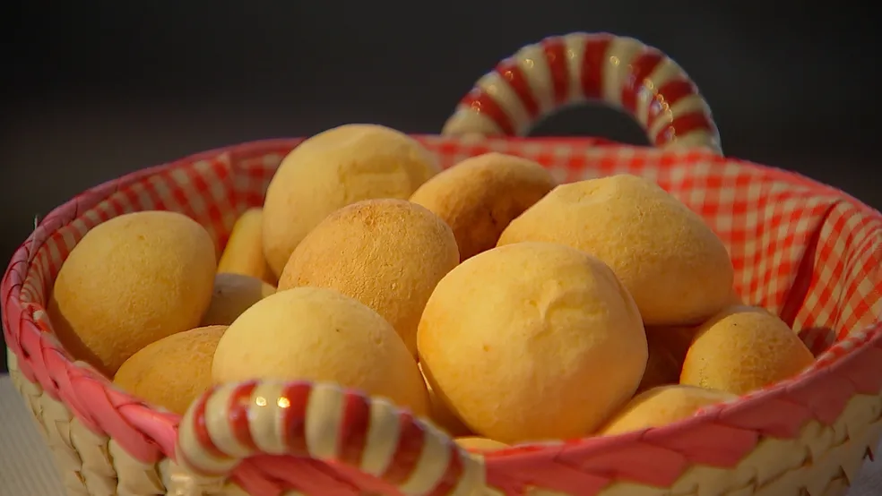

INICIAL |
SOBRE |
PRODUTOS |
CONTATO |
• Pão de queijo recheado com goiabada – R$ 2,00 (unidade)
• Pão de queijo tradicional – R$ 1,50 (unidade)

• Pão de queijo com queijo da Serra da Canastra – R$ 2,50 (unidade)